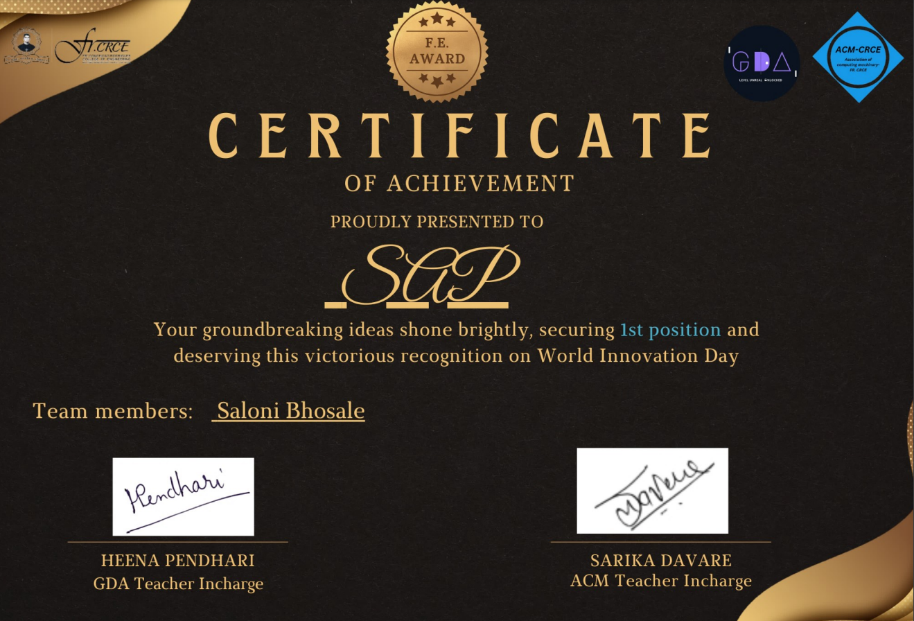

Achievements
I am thrilled and honored to have secured the 1st position on World Innovation Day. This recognition celebrates the hard work and creativity that went into bringing my ideas to life. I hope this achievement inspires others to pursue their own groundbreaking innovations!
 I had the pleasure of volunteering at PRAKALP 2.0, held at Fr. Conceicao Rodrigues College of Engineering on April 16th, 2024. Contributing to this event was a rewarding experience, allowing me to support innovative projects and connect with like-minded individuals. I'm grateful for the opportunity to make a positive impact!
I had the pleasure of volunteering at PRAKALP 2.0, held at Fr. Conceicao Rodrigues College of Engineering on April 16th, 2024. Contributing to this event was a rewarding experience, allowing me to support innovative projects and connect with like-minded individuals. I'm grateful for the opportunity to make a positive impact!